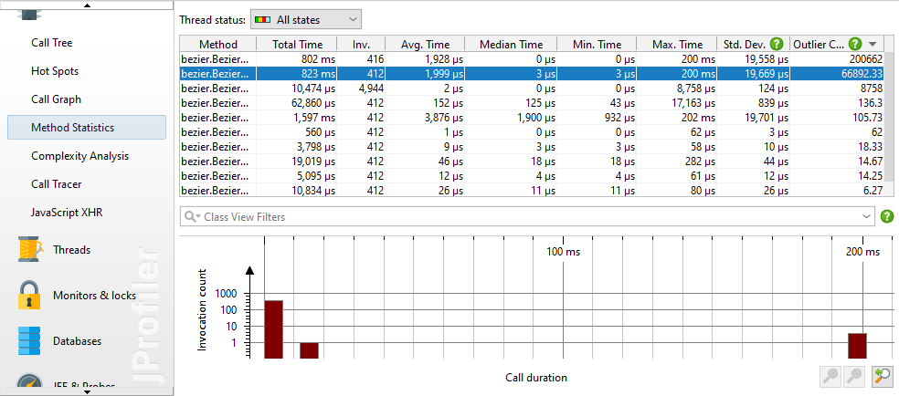
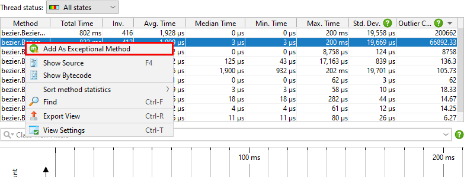
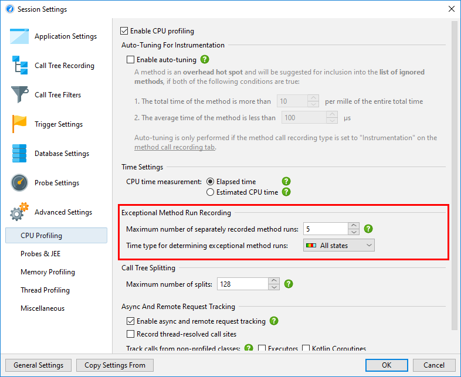
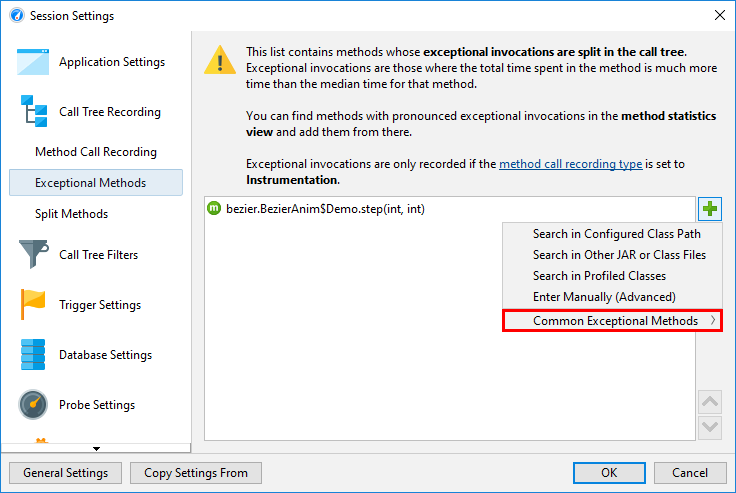
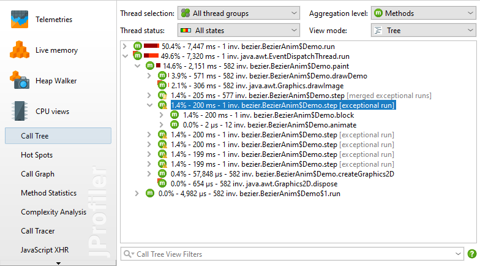
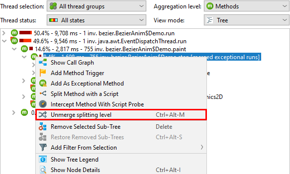

In some situations, it's not the average invocation time of a method that is a problem, but rather that a method misbehaves every once in a while. In the call tree, all method invocations are cumulated, so a frequently called method that takes 100 times as long as expected once every 10000 invocations will not leave a distinct mark in the total times.
To tackle this problem, JProfiler offers the method statistics view and the exceptional method recording feature in the call tree.
The method statistics view shows information about the distribution of call durations to each method.
With the histogram of all recorded call durations, you can check if you are dealing with single outliers
or a continuous spectrum of durations. The standard deviation and the outlier coefficient that is calculated as
(maximum time - median time) / median time can help you to quantify methods in this respect
and sort them in the method table.

By default, the graph shows invocation counts on a logarithmic scale. This is ideal for identifying outliers with a low relative frequency. To get a feeling for the real numbers, it may be useful to switch to a linear axis in the view settings.
Once you have identified a method that suffers from exceptional call durations, you can add it as an exceptional method in the context menu. The same context menu action is also available in the call tree view.

When you register a method for exceptional method recording, a few of the slowest invocations will be retained separately in the call tree. The other invocations will be merged into a single method node as usual. The number of separately retained invocations can be configured in the profiling settings, by default it is set to 5.
When discriminating slow method invocations, a certain thread state has to be used for the time measurement. This cannot be the thread status selection in the CPU views, because that is just a display option and not a recording option. By default, the wall clock time is used, but a different thread status can be configured in the profiling settings.

In the session settings, you can remove exceptional methods or add new ones without the context of the call tree or the method statistics view. Also, the exceptional method configuration provides the option to add exceptional method definitions for well known systems, like the AWT and JavaFX event dispatch mechanisms where exceptionally long-running events are a major problem.

Exceptional method runs are displayed differently in the call tree view.

The split method nodes have modified icons and show additional text:
Like for call tree splitting by probes and split methods, an exceptional method node has a Merge Splitting Level action in the context menu that lets you merge and unmerge all invocations on the fly.
